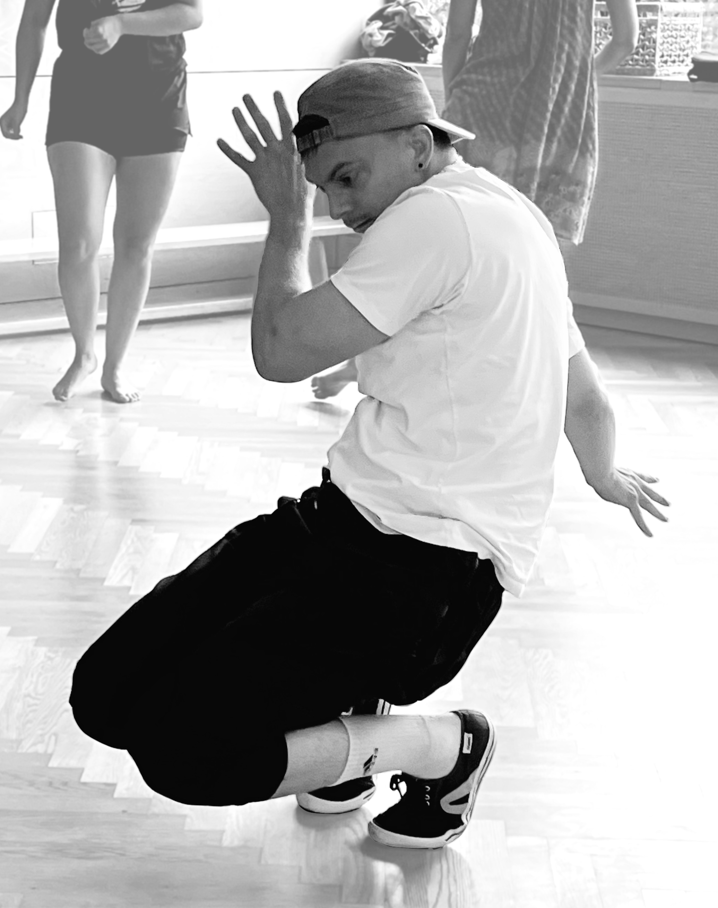
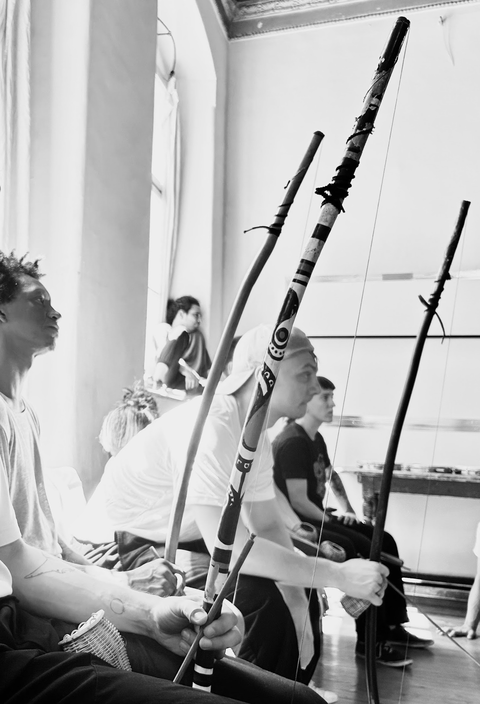
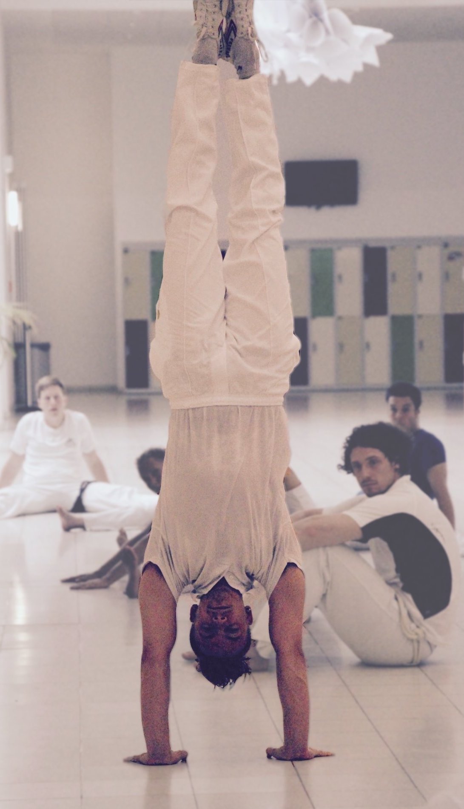
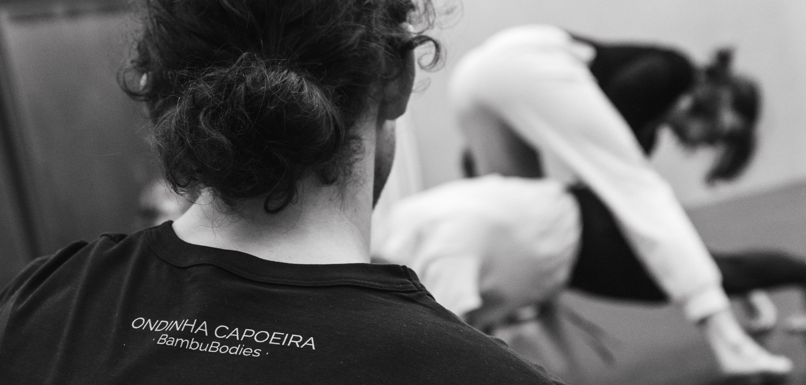

Was ist Capoeira?
Capoeira ist ein sogennantes Körperspiel, bekannt für fließende Akrobatik und Kicks. Es entsteht ein komplexer Dialog, der stetig zwischen Kooperation und Konfrontation wechselt.
Sie entstand im afrobrasilianischen Widerstand gegen Kolonialismus und Sklaverei. Heute wird Capoeira weltweit praktiziert und genießt UNESCO-Anerkennung als immaterielles Kulturerbe der Menschheit.
Abgesehen davon ist Capoeira ein tolles Training für Fitness, Freude und Freundschaft!
Unser Lehrer
Ondinha (on-DSCHIEN-ja) lernt und lebt Capoeira seit 2010. 2019 erhielt er seinen Trainertitel. Er unterrichtet bereits in den USA, Indien, China und Singapur, wobei er für seinen durchdachten und "nerdigen" Ansatz bekannt wurde. Er ist studierter Psychologe und legt großen Wert auf das gemeinschaftliche Miteinander der Capoeira.
Ondinha ist Schüler von Contramestre Baris Yazar.
Unser Ansatz
Wir alle haben einen Körper, und genau da setzen wir an.
Obwohl Capoeira einiges mehr beinhaltet als nur Bewegung, sehen wir körperliches Training als einen guten Einstieg für Anfänger*innen. Wir nutzen die Movement Rituals-Methode, um eine solide Basis für Capoeira zu schaffen und Kraft, Beweglichkeit, Koordination, Propriozeption und Kreativität zu entwickeln. Die Methode
Unser Training beruht auf den vier Grundelementen Kondition, Technik, Spiel und Ritual. Das Ziel ist es, das eigenständige Erforschen zu fördern, sodass Lernende im Laufe der Zeit ihren eigenen Zugang zur Capoeira entwickeln. Unsere Prinzipien
Du möchtest mehr darüber erfahren, was dich im ersten Training erwartet? Häufig gestellte Fragen
Trainingszeiten
Buchungsinfos auf Anfrage per Email (hello@ondinha.com) oder Instagram


Häufig gestellte Fragen
Muss ich fit sein, um mitzumachen?
Nein. Durch das Training wirst du ja fit. Fang einfach an!
Brauche ich Vorkenntnisse?
Nein. Wir bieten Kurse für unterschiedliche Erfahrungslevels an.
Auf welcher Sprache wird unterrichtet?
Englisch, bei Bedarf mit Übersetzungen ins Deutsche und Portugiesische.
Wie buche ich ein Training?
Die Kursanmeldung erfolgt über das Unisport-System der Technischen Universität Berlin. Wenn du nicht zur Berliner Universitätscommunity gehörst, melde dich bitte zuerst bei uns. Wir helfen dir gerne weiter. Du musst kein Student sein, um mitzumachen, aber das System ist etwas kompliziert.
Was soll ich mitbringen?
Wasser, deine Trainingskleidung und Vorfreude.
Du darfst prinzipiell tragen, worin du dich wohlfühlst, aber bitte nur lange Hosen (keine Shorts). Du kannst barfuß oder mit flachen Hallenschuhen trainieren.
Ist Capoeira wirklich was für mich? Es sieht sehr schwer aus.
Capoeira ist für alle.
Das Training ist in der Tat anspruchsvoll, aber das liegt nicht an dir. Capoeira ist eine äußerst vielseitige Kunstform, die Tanz, Kampf, Akrobatik, Gesang, Instrumentalspiel, Improvisation, Geschichte und vieles mehr umfasst. Es ist für jede*n eine Herausforderung. Möglichst interessante Fehler begehen: so lernen wir!
Wie lange dauert es, bis ich gut in Capoeira bin?
Die schlechte Nachricht: In der Capoeira gibt es keine Abkürzungen — es ist ein langer Weg. Die gute Nachricht: Der Weg ist schön. Genieß ihn!
Allerdings: Wer regelmäßig trainiert, kann sich nur verbessern. Konsistenz ist das Wichtigste.
Was sollte ich vor meinem ersten Training noch wissen?
Bitte sei etwas früher am Trainingsort. Der Unterricht beginnt pünktlich.
Stell dich darauf ein, gefordert zu werden und hart zu arbeiten. Anfänger*innentraining ist kein leichtes Training. Es ist hartes Training – aber eben für Anfänger*innen. Du wirst in deiner ersten Stunde wahrscheinlich verwirrt sein und am nächsten Tag Muskelkater haben. Das ist normal. Einfach weitermachen!
